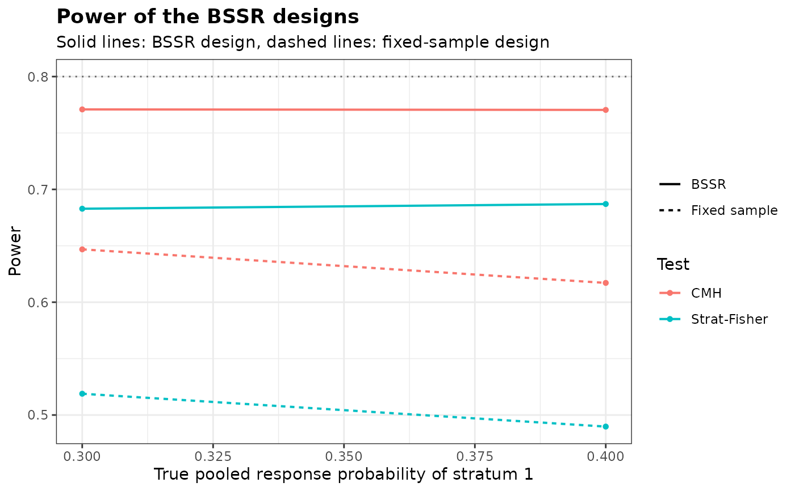

Power and Sample Size of Several Stratified Re-estimation Designs
Source:R/StratGridBSSR.R
StratGridBSSR.RdEvaluates a set of stratified designs with blinded sample size re-estimation over a
common set of scenarios of true pooled response probabilities of the strata, by calling
StratPowerBSSR for each design, and returns the results as one data frame
with a row for each design and each scenario.
Arguments
- design
Data frame with one row per design. Its columns are arguments of
StratPowerBSSRother thanpandn.interim, for exampleTest,Delta.A,omegaorN.max. An argument with one value per stratum is given by one column per stratum, named with the suffixes.S1,.S2, ..., for exampleN1.S1andN1.S2; a column without the suffix gives a value common to the strata, where the argument allows it (randDelta.T). The interim group sizes are given by the columnsn1.interim.S1, ...andn2.interim.S1, ..., and the planned group sizes either byN1.S1, ...andN2.S1, ...or by the planning probabilitiesp.plan.S1, ..., see Details. A missing value in a column means that the argument is not given for that design- p
True pooled response probabilities of the strata at which every design is evaluated: a vector with one element per stratum, or a matrix with one row per scenario and one column per stratum. Every design must have this number of strata. Scenarios in which a response probability of a group falls outside the unit interval are dropped for that design, and every design needs at least one scenario that is kept
- Delta.T
True treatment effect, a single value common to the strata or one value per stratum. The default of
NULLuses the assumed effectDelta.Aof each design. It can also be given indesign, but not in both places- type1
Logical. If
TRUE, the largest type I error rate of each design and of the fixed design is added, as computed byStratTypeIErrorBSSRwith its default grid ofthetaand, with two strata, the certified maximum. With three or more strata the rates are simulated at every point of the grid, which takes long. Default isFALSE- verbose
Logical. If
TRUE, a message is issued as each design is evaluated. Default isFALSE- ...
Arguments shared by all designs, with the names of the arguments of
StratPowerBSSR. An argument with one value per stratum is given here as a vector, for exampleN1 = c(20, 20), and the interim group sizes asn1.interimandn2.interim. An argument may not be given both here and indesign
Value
An object of class bbssr_sgrid, which inherits from bbssr_grid: a
data frame with one row for each design and each scenario in which the response
probabilities lie in the unit interval, containing the index design of the
design, the columns of design (other than the group sizes and Delta.T),
and:
- N1.S1, ..., N2.S1, ...
Planned group sizes
- n1.interim.S1, ..., n2.interim.S1, ...
Interim group sizes
- Delta.T.S1, ...
True treatment effect in the strata
- scenario
Row of
p- p.S1, ..., p1.S1, ..., p2.S1, ...
True pooled response probabilities of the strata and those of the two groups
- power.BSSR, power.TRAD
Power of the design with re-estimation and of the fixed design
- se.BSSR, se.TRAD
Monte Carlo standard errors, present when a design has them (three or more strata, or a random allocation) and
NAfor the other designs- E.N, SD.N
Expected value and standard deviation of the final total sample size
- N.q25, N.q50, N.q75
Quartiles of the final total sample size
- P.N.max
Probability that the final total sample size is the largest the design can reach, see
summary.bbssr_spowerbssr
The attribute designs has one row per design with its index, the columns of
design other than the group sizes and Delta.T, the planned and interim
group sizes and the true effect and, with type1 = TRUE, the largest type I error
rates TIE.BSSR and TIE.TRAD, the probabilities
theta.S1.BSSR, ... and theta.S1.TRAD, ... at which they occur, the
certified upper bounds bound.BSSR and bound.TRAD (NA without the
certificate) and, with a random allocation, the standard errors se.BSSR and
se.TRAD at the largest rates. Warnings and errors raised while a design is
evaluated are prefixed with the index of the design. summary.bbssr_grid
summarizes each design over the scenarios, and plot.bbssr_sgrid draws the
results.
Details
When a design has the planning probabilities p.plan.S1, ... instead of the
planned group sizes, the planning probabilities of the two groups of each stratum are
obtained from them and the assumed effect Delta.A, as in the re-estimation, and
the planned group sizes are those of StratSampleSize with the fractions
frac, which must then be given, the allocation ratio, the test, the level and
the target power of the design, the method ss.method of the re-estimation and
the fixed allocation.
Designs with a random allocation (alloc) or with three or more strata use the
random numbers of R in the order of the designs, so a call to set.seed() before
StratGridBSSR makes the results reproducible.
Author
Gosuke Homma (my.name.is.gosuke@gmail.com)
Examples
design <- data.frame(Test = c('CMH', 'Strat-Fisher'))
grid <- StratGridBSSR(design, p = rbind(c(0.3, 0.5), c(0.4, 0.6)), Delta.A = 0.3,
N1 = c(10, 10), N2 = c(10, 10), omega = 0.5, r = 1,
alpha = 0.05, tar.power = 0.8, ss.method = 'standard')
summary(grid)
#> design Test N1.S1 N1.S2 N2.S1 N2.S2 n1.interim.S1 n1.interim.S2
#> 1 1 CMH 10 10 10 10 5 5
#> 2 2 Strat-Fisher 10 10 10 10 5 5
#> n2.interim.S1 n2.interim.S2 Delta.T.S1 Delta.T.S2 power.BSSR.min
#> 1 5 5 0.3 0.3 0.7704415
#> 2 5 5 0.3 0.3 0.6828610
#> power.BSSR.max power.TRAD.min power.TRAD.max E.N.max
#> 1 0.7708956 0.6171045 0.6468430 59.74021
#> 2 0.6870437 0.4897454 0.5188663 59.74021
# \donttest{
plot(grid, colour.by = 'Test')

# Planned group sizes from the planning probabilities of the strata
design <- data.frame(Delta.A = c(0.25, 0.3), p.plan.S1 = 0.3, p.plan.S2 = 0.5)
grid <- StratGridBSSR(design, p = c(0.3, 0.5), frac = c(0.5, 0.5), omega = 0.5, r = 1,
alpha = 0.025, tar.power = 0.8, Test = 'CMH',
ss.method = 'standard')
attr(grid, 'designs')
#> design Delta.A p.plan.S1 p.plan.S2 N1.S1 N1.S2 N2.S1 N2.S2 n1.interim.S1
#> 1 1 0.25 0.3 0.5 29 29 29 29 15
#> 2 2 0.30 0.3 0.5 20 20 20 20 10
#> n1.interim.S2 n2.interim.S1 n2.interim.S2 Delta.T.S1 Delta.T.S2
#> 1 15 15 15 0.25 0.25
#> 2 10 10 10 0.30 0.30
# }